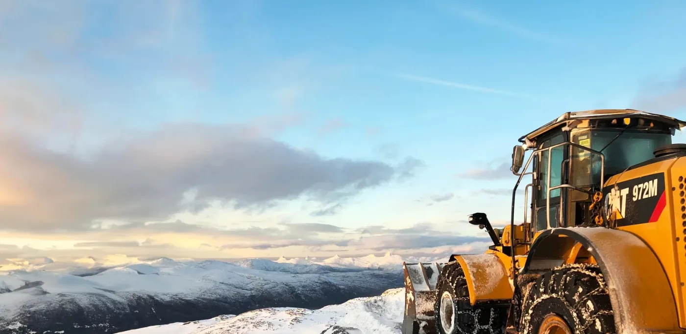

Maskinentreprenør · Inderøy
Grunnarbeid siden 1954.
I over 70 år har vi jobbet for å være det foretrukne valget av entreprenør- og transporttjenester for offentlige og private kunder.
Tjenester
Slik kan vi bidra
Store og små oppdrag for private og offentlige kunder – med egne maskiner og egne folk.
Grunnarbeid
Utgraving og klargjøring, med sentral godkjenning i veg- og grunnarbeid.
02Vann og avløp
Sertifiserte anleggsrørleggere og komplekse VA-anlegg.
03Massetransport
Bortkjøring og tilførsel av masser med egne biler.
04Fjell og bergverk
Fjellarbeid og bergverksarbeid der det kreves.
05Maskin- og spesialtransport
Transport av maskiner og spesiallaster.
06Riving og miljøsanering
Riving med håndtering av miljøfarlige materialer.

Kompetanse
Godkjenning der det kreves
Austad Maskinstasjon AS har bred erfaring og tar på seg både store og krevende oppdrag. Vi har sentral godkjenning innen veg- og grunnarbeid, landskapsutforming, innmåling og utstikking.
- Sentral godkjenning veg- og grunnarbeid.
- Landskapsutforming.
- Innmåling og utstikking.
- Sertifiserte anleggsrørleggere.
Har dere et oppdrag i vente?
Ta kontakt, så avklarer vi omfang og tid før vi starter.